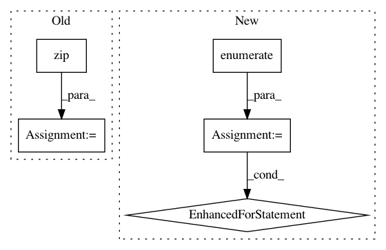

f816b2d21de51ea97a45d8cbece6a528848c56e4,examples/03_connectivity/plot_compare_decomposition.py,,,#,33
Before Change
// We select relevant cut coordinates for displaying
cut_component = index_img(components_imgs[0], indices[dict_learning])
cut_coords = find_xyz_cut_coords(cut_component)
for estimator, components in zip(estimators, components_imgs):
// 4D plotting
plot_prob_atlas(components, view_type="filled_contours",
title="%s" % names[estimator],
cut_coords=cut_coords, colorbar=False)
// 3D plotting
plot_stat_map(index_img(components, indices[estimator]),
title="%s" % names[estimator],
cut_coords=cut_coords, colorbar=False)
show()
////////////////////////////////////////////////////////////////////////////////////////////////////////////////////////////////////////////////////////////////
// .. note::
//
After Change
//////////////////////////////////////////////////////////////////////////////////////////////////////////////////////////////////////////////////////////////
// One plot of each component
for i, cur_img in enumerate(iter_img(dictlearning_components_img)):
plot_stat_map(cur_img, display_mode="z", title="Comp %d" % i,
cut_coords=1, colorbar=False)
show()
////////////////////////////////////////////////////////////////////////////////////////////////////////////////////////////////////////////////////////////////
// .. note::
//
In pattern: SUPERPATTERN
Frequency: 3
Non-data size: 5
Instances
Project Name: nilearn/nilearn
Commit Name: f816b2d21de51ea97a45d8cbece6a528848c56e4
Time: 2019-04-18
Author: gael.varoquaux@normalesup.org
File Name: examples/03_connectivity/plot_compare_decomposition.py
Class Name:
Method Name:
Project Name: cesium-ml/cesium
Commit Name: e547a82c24b37c157bc9b40d2724a7b1fd0a7b0f
Time: 2017-04-17
Author: brettnaul@gmail.com
File Name: cesium/featurize.py
Class Name:
Method Name: save_featureset
Project Name: oddt/oddt
Commit Name: aa5d761c03ea31df01ff51ec3634dd89cd73bec1
Time: 2018-05-17
Author: maciek@wojcikowski.pl
File Name: oddt/toolkits/extras/rdkit_fixer.py
Class Name:
Method Name: UFFConstrainedOptimize